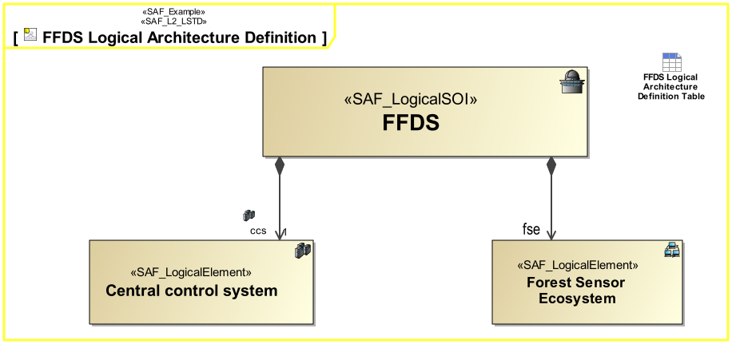

L2_LSTD Logical Structure Definition Viewpoint
| Domain | Aspect | Maturity |
|---|---|---|
| Logical | Taxonomy & Structure |

The Logical Structure Definition Viewpoint describes how the system is decomposed into a hierarchical structure of logical elements responsible for different system functions (divide & conquer principle). It covers related logical concepts and principles that support the logical operation of the system and is widely reusable among similar systems like product families, or product generations.
The Logical Structure Viewpoint supports the “System Architecture Definition Process” activities of the INCOSE SYSTEMS ENGINEERING HANDBOOK 2023 [§2.3.5.4] and contributes to the artifact “System Architecture Description”.
Furthermore, the Logical Structure Viewpoint supports the “Allocation and Partitioning of System Functions to Logical Entities” activities.
A block definition diagram (BDD) featuring the logical system block and logical blocks for any kind of logical element the system is composed of. These elements are connected to the system block by means of aggregation relationships. Note: Multiple relationships to a kind of element are allowed meaning, that this kind of element is used in several roles.
The following Stereotypes / Model Elements are used in the Viewpoint: